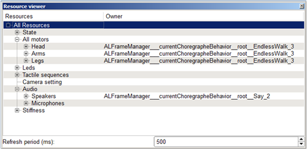
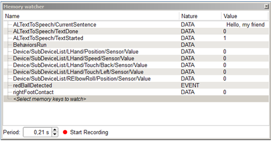
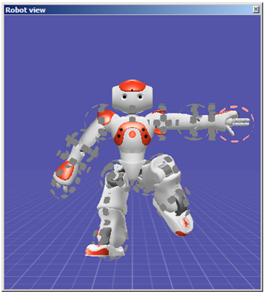
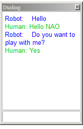
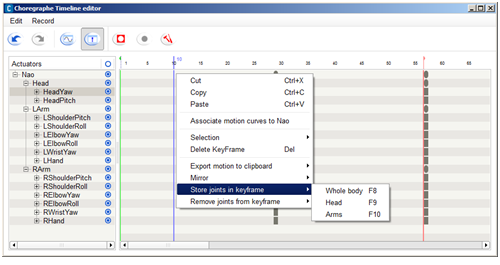
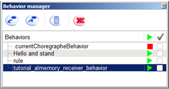
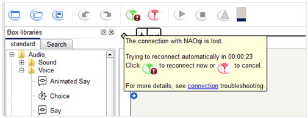
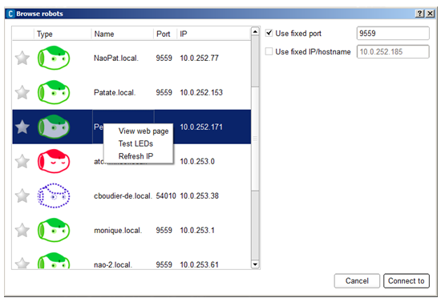
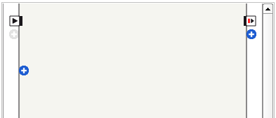
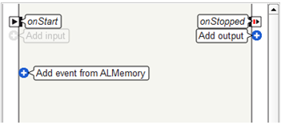

What’s new - 1.14¶
Improving customer support¶
Implementation of an issue reporter¶
Help us improve our software! In case of a NAOqi issue, you can now send us an issue report, automatically or manually.
For an automatic upload, see: the Bug report option in opennao-web-page-settings, for a manual upload, see: How to retrieve an issue report.
Supported Operating Systems¶
64-bits fully supported¶
This release fully supports 64-bits OS.
MAC OS X 32-bits no longer supported¶
MAC OS X 32-bits is no longer supported.
Therefore, upgrading Choregraphe is no longer possible on computer running non-supported Operating Systems such as Mac OS X version 10.5 Leopard or earlier.
Audio¶
New voice for Japanese text to speech¶
NAO Speaks Japanese with a new, much better voice.
ALTextToSpeech now uses the speech synthesizer provided by ACAPELA for all languages, including Japanese.
For further details, see: ALTextToSpeech.
Text to speech: voices have been improved¶
In order to improve voice quality, ALTextToSpeech now uses a new version of language files.
Vision¶
New module: ALVisualCompass¶
ALVisualCompass is an extractor which gives the current rotation angles of the robot compared to a given reference image along the Y and Z axis.
The module gives the rotation of the FRAME_ROBOT reference, so the whole body of the robot and not only its head. This means that if the robot stays standing but moves its head, the deviation angles will not change.
For further details, see: ALVisualCompass.
New module: ALMovementDetection¶
ALMovementDetection extractor enables to detect movements around the robot thanks to its camera.
Warning
This module is experimental. In order to improve its performances, it is likely the algorithm used for the detection will change in the next version, which may result in API changes.
For further details, see: ALMovementDetection.
ALVisionToolbox is deprecated¶
Use the following modules instead:
- ALBacklightingDetection to detect back-lighting situations and be notified by an event when back-lighting occurs.
- ALDarknessDetection to detect darkness situations and be notified by an event when the image becomes dark.
- ALPhotoCapture to take one or several pictures.
- ALVideoRecorder to record video.
Trackers¶
ALRedballDetection - ALFaceDetection improved¶
Tracking is now possible with both cameras.
For further details see: naoqi-trackers.
The camera used for the detection in now precised in the information returned, as well as its position in FRAME_TORSO and FRAME_ROBOT.
For further details, see: ALRedBallDetection and ALFaceDetection.
Sensors¶
Since release 1.14, usage of the Chest button LEDs is deprecated. The usage of the Chest button will be soon restricted in order to use it as a system button.
For further details, see: ALLeds.
Motion¶
New module: ALRobotPosture¶
ALRobotPosture module allows you to make the robot go to a different pose.
For further details, see: ALRobotPosture.
New methods: wakeUp and rest¶
These new methods are convenient to manage the Stiffness globally, for the whole robot.
For further details, see: ALMotionProxy::wakeUp and ALMotionProxy::rest.
Self-collision avoidance improved¶
Self-collision avoidance can be deactivated in any case, even if the current state of the chain in collision.
For further details, see: ALMotionProxy::setCollisionProtectionEnabled.
getLimits returns also maxTorque¶
Additionally to minAngle, maxAngle and maxVelocity,
ALMotionProxy::getLimits returns the maxTorque.
Space names have changed¶
Constant names have changed:
- SPACE_TORSO becomes FRAME_TORSO
- SPACE_WORLD becomes FRAME_WORLD
- SPACE_NAO becomes FRAME_ROBOT
Note that for backward compatibility, former constants are still available.
For further details, see: Frames.
Deprecated module: ALMotionRecorder¶
Use the Animation Mode instead.
For further details, see: Animation Mode.
ALMotion deprecated methods¶
Walk control becomes Locomotion control
General Tools
| Deprecated method | Replaced by ... |
|---|---|
ALMotionProxy::getJointNames |
ALMotionProxy::getBodyNames |
Motion task
| Deprecated method | Replaced by ... |
|---|---|
ALMotionProxy::killWalk |
ALMotionProxy::killMove |
Core¶
New module: ALConnectionManager¶
This new module provides methods for network configuration and connection. ALConnectionManager supports several technologies such as Ethernet, WiFi and Bluetooth.
For further details, see: ALConnectionManager.
ALMemory: 2 new methods¶
Two new methods allow you to set and get a description for each memory entry.
For further details, see: ALMemoryProxy::getDescriptionList and
ALMemoryProxy::setDescription.
Libraries¶
New
- TBB
- lttng
- OpenNI (only in NAO v4 image)
Removed
Urbi
Updated
Several libraries used by NAOqi SDK has been updated:
- eigen 2 => 3
- python 2.6.6 => 2.7.2
- boost 1.45.0 => 1.48.0
- opencv 2.1.0 => 2.3.1a
- glibc 2.11.3 => 2.13
- net-misc/connman 0.69.4 => 1.1
- net-wireless/wpa_supplicant 0.7.3 => 1.0
- wireless-compat 3.2 => 3.4
For further details about OpenCV, see: Using OpenCV.
Updated Development tools¶
- gdb 7.2 => 7.3.1
- strace 4.5.20 => 4.6
- valgrind 3.5.0 => 3.6.1
- Updated toolchain to gcc 4.5.3 in cross-toolchains.
Choregraphe - new tools¶
Resource Viewer panel¶
Resource viewer is a new panel that dynamically displays the name of the box locking resources.
{kind=link}
For further details, see: Resource viewer panel.
Memory watcher panel¶
Memory watcher is a new panel allowing you to easily display the value of events or data during the execution of a behavior.
{kind=link}
Memory watcher has a Recording function allowing you to save a CSV file containing the history of event or data values during the recording.
For further details, see: Memory watcher panel.
Forward kinematics in 3D View (Experimental)¶
Activate the option Use 3D controller for motors (Experimental) in order to test new forward kinematics.
{kind=link}
For further details, see: Choregraphe preferences and Robot View.
Dialog panel (Experimental)¶
Activate the option Activate dialog widget (Experimental) in order to test new Dialog panel.
{kind=link}
For further details, see: Choregraphe preferences and Dialog panel.
Choregraphe - improvements¶
Optimization¶
Optimization has been one of our major priority. More specifically, behavior loading is now much faster.
Timeline¶
Supports all models¶
The Timeline tools are now aware of the Body type of the connected robot.
For example, when you are connected to a T14, legs joints are not displayed anymore.
{kind=link}
For further details, see: Timeline and Timeline Editor.
Timeline properties accessible by scripts¶
Methods allowing you to manage the Timeline execution have been improved and simplified. Now Timeline object can be accessed in python using:
- self.getTimeline()
- self.getParentTimeline()
For further details, see: Built-in functions in the script of a box.
Animation mode¶
Animation mode is easier to use:
- it is no more necessary to be in Recording mode to use it,
- vocal commands “Store position” is available in all languages,
- using Animation Mode to define Motion keyframes is just as easy as pressing F8.
For further details, see: Getting started with the Animation Mode.
Behavior manager panel¶
The Behavior manager panel has a new, simplified Toolbar.
{kind=link}
For further details, see: choregraphe-overview-behavior-manager-panel.
Connection Management¶
The management of connection troubles has been improved: the modal alert has been replaced by a tooltip offering guidance to fix the problem.
{kind=link}
For further details, see: Connecting Choregraphe to a robot.
The Connection widget has also evolved: now the IP address of the robot is displayed and can be refreshed if necessary.
{kind=link}
For further details, see: Connect to panel.
Flow diagram¶
New buttons appear on the Input and Output borders of the Flow diagram:
{kind=link}
To display their names, hold down Shift-Control:
{kind=link}
- (+) Add input and (+) Add output: eases the access to the existing contextual menu.
- (+) Add event from ALMemory: gives an easier access to Events.
For further details, see: Managing Flow diagram inputs and outputs.
File > Save project¶
File menu has been simplified: a single command allows saving a Project as a CRG file or as a directory.
For further details, see choregraphe-howto-save-project-as-crg and choregraphe-howto-save-project-as-directory.
Resource Editor¶
Resource editor becomes Box resource selector,
improved in order to be more intuitive.

For further details, see: Box resource selector.
Inherited parameters¶
In order to clarify parameters inheritance, when activated, if a parent parameter is found:
- the child parameter Type is disabled and
- it is no more possible to edit the value of the child parameter.
Automatic free trial license¶
When installing Choregraphe, it is no more necessary to enter the free trial key. User can freely use Choregraphe for 90 days.
During 90 days, at startup, a reminder gives the choice to use the free trial or to enter the license key.
New Box Libraries¶
the default Box Library has been split in 3 box libraries:
- standard,
- advanced and
- deprecated.
For further details, see: Box libraries panel.
Choregraphe - new boxes¶
Audio¶
Sound Peak¶
Audio > Sound > Sound Peak:
Communication¶
Choregraphe Connection¶
Communication > Network > Choregraphe Connection:
Check if NAO is connected to Choregraphe and warn when it gets connected or gets disconnected.
Internet Connection¶
Communication > Network > Internet Connection:
This box detects when NAO is connected or disconnected to the Internet.
Motion¶
Set Fall Manager¶
Advanced box Library > Motions > Set Fall Manager:
System¶
Get Name¶
System > Get Name:
Log¶
Debug > Log:
Prompt the message in the debug window. You can set a prefix and a priority for the message in the parameters.
Templates¶
3 templates are now available in order to quickly create Diagram, Script or Timeline boxes.
Trackers¶
Vision¶
Record Video¶
Vision > Record Video:
Record a video from NAO’s camera. Stop recording when the duration set in parameter is elapsed.
Take Picture¶
Vision > Take Picture:
Take a picture with NAO’s camera and store it in his memory in ~/recordings/cameras. The image format is JPG.
Unlearn Face¶
Vision > Unlearn Face:
Known issues¶
- Bug #8104 Nao Web Page: Language and Time zone combo boxes are not correctly set with Internet Explorer. Workaround: use Chrome or Firefox.
- Bug #8422 Freebox V6 is not supported.
- Bug #6554 NAO’s webpage is sometimes not available
- Bug #6412 On Vista, you need to be administrator to use the flasher
- Bug #6622 Hand touch sometimes activated by motor usage
- Bug #6135 audio driver: locked in mute (atom)
- Bug #5198 When battery is fully charged and plugged, battery status is not well updated, due to limitation on battery controller.
- Feature #4232 MP3 files start slower than WAV files
- Feature #7290 The two parameters Voice Shapping and Speed of the say box have no effect for Korean.
This release Note was generated on 2018-04-10.